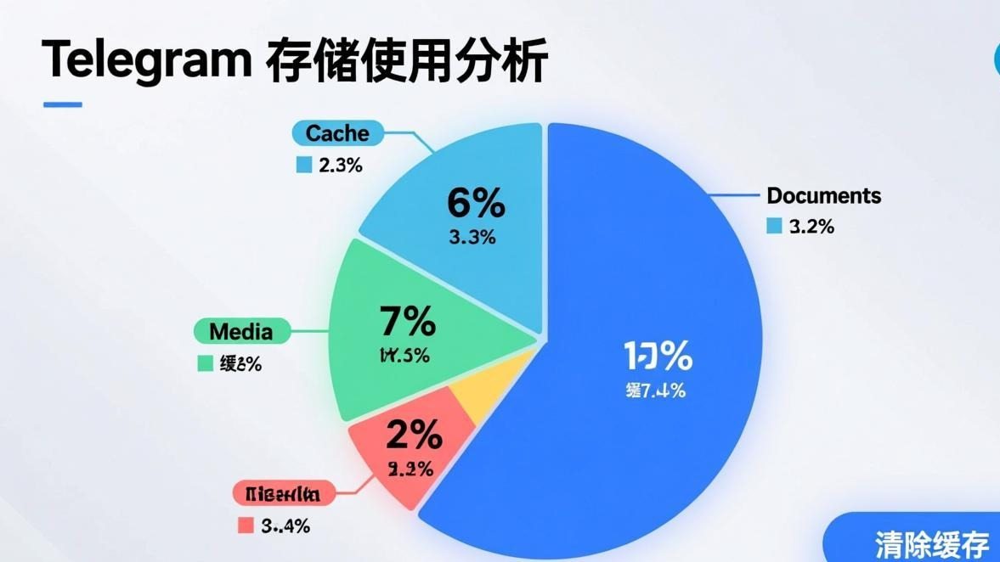
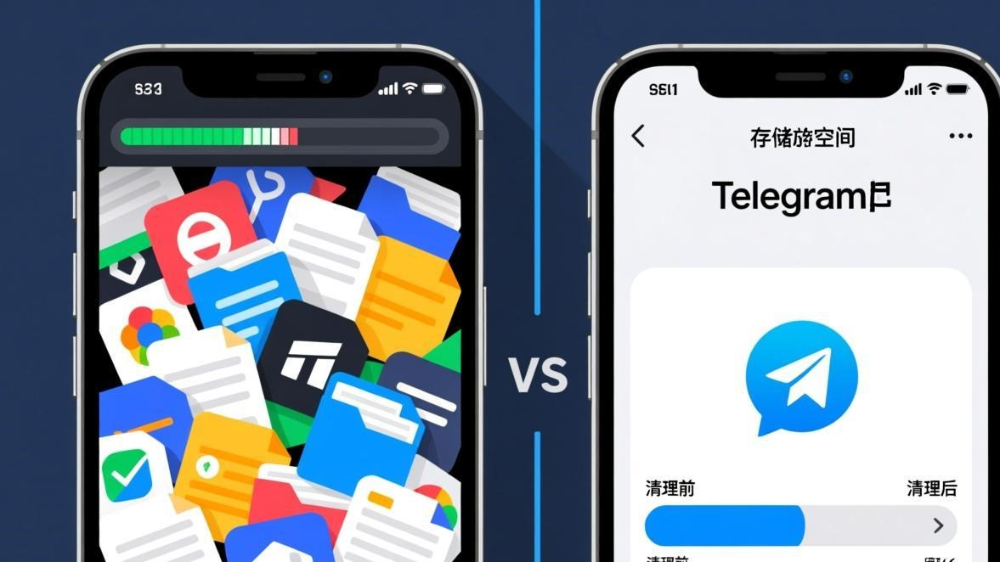

上个月我手机突然弹出来一个提示：「存储空间不足」。当时我还挺纳闷的，我这才128G的手机，平时也不怎么存东西，怎么就满了？
点开存储分析一看，好家伙，Telegram占了整整32GB！我当时就震惊了，我平时也就是用Telegram聊聊天、看看群消息，怎么就能占这么多空间？

后来研究了一下才发现，Telegram的自动下载功能默认是全部开启的。也就是说，不管是图片、视频、还是文档，只要有人发，它就会自动帮你下载到本地。群多的话，一天下来能攒好几个GB的缓存。
先看看Telegram到底占了多少空间
在开始清理之前，先看看Telegram到底在你的设备上塞了多少东西。不同平台的查看方法不太一样：
**Android用户**： 打开Telegram > 设置 > 数据和存储 > 存储使用量。这里会显示Telegram占用的总空间，以及各类文件（图片、视频、文档、贴纸、语音等）分别占了多少。

**iOS用户**： 打开Telegram > 设置 > 数据和存储 > 存储使用量。iOS的显示会更详细一些，还会按聊天排序，告诉你哪个聊天占的空间最多。
**电脑版用户**： 电脑版的话，直接去文件管理器看Telegram的安装目录或者数据目录。Windows一般在「文档」或者「AppData」里，Mac在「应用程序支持」里。
看完之后你可能会跟我一样震惊——这玩意儿怎么这么能吃空间？
方法一：常规清理（小白都能学会）
最简单的方法就是直接用Telegram自带的清理功能。这个方法适合不想折腾的用户，点几下就能释放几个GB的空间。
步骤 1
打开Telegram，进入「设置」>「数据和存储」>「存储使用量」
步骤 2
点「清除缓存」按钮（注意不是「清除全部缓存」）
步骤 3
在弹出的界面里，你可以选择清除哪些类型的缓存
步骤 4
建议保留「聊天文件」 if you need them, 其他的比如缩略图、临时文件都可以清掉
步骤 5
点「清除缓存」，等它跑完就行了
这个方法能清理掉大部分的临时文件和缩略图，但是对于已经下载到本地的媒体文件（比如图片和视频的原图），是不会删除的。如果你想要更彻底的清理，得用下面的方法。
注意：
「清除缓存」和「清除全部缓存」是不一样的。清除缓存只会删掉临时文件，清除全部缓存会把所有媒体文件都删掉（包括你已经看过的图片和视频）。如果不想重新下载这些文件，建议用选择性清理。
方法二：选择性清理（推荐这个方法）
Telegram有个很实用的功能，就是可以按聊天来清理缓存。比如你加了一些资源群或者视频群，这些群里的媒体文件可能就占了大半的空间。
操作步骤：
1. 打开「存储使用量」，你会看到一个聊天列表，按占用空间排序 2. 点进占用空间最多的那个聊天 3. 你会看到这个聊天里各类文件分别占了多少空间 4. 点「清除缓存」，可以选择清除哪些类型的文件 5. 比如你可以只清除视频，保留图片和文档
我用这个方法清理了一下，光是一个资源群就清出来12GB的空间。讲真，那些视频我其实早就看过了，留着也是占地方。
方法三：关闭自动下载（治本的方法）
清理缓存只是治标，要想不让缓存再涨上去，得把自动下载关掉。或者至少得设置一下，别什么玩意儿都自动下载。
Telegram的自动下载设置分三种网络环境：移动数据、WiFi、漫游。每种都可以单独设置。
我的建议是：
**移动数据**：全部关掉。手机流量本来就贵，而且还慢，没必要在移动网络下自动下载大文件。
**WiFi**：可以保留图片自动下载，视频和文档建议关掉。图片一般不大，下载了也无所谓，但是视频和文档就很占空间了。
**漫游**：全部关掉。漫游流量巨贵，千万别让它自动下载东西。
设置方法：打开设置 > 数据和存储 > 自动下载媒体，然后分别设置这三种网络环境下的下载规则。
小贴士：
如果你经常在某个WiFi环境下使用Telegram（比如家里或者公司），可以把那个WiFi添加到「私人网络」列表里，然后给私人网络设置更宽松的自动下载规则。
方法四：电脑版深度清理
电脑版的Telegram缓存清理跟手机版不太一样。电脑版没有那种可视化的存储分析界面，得自己去找缓存文件夹。
**Windows用户**： Telegram的缓存一般在这两个位置： - C:\Users\你的用户名\AppData\Roaming\Telegram Desktop\tdata - C:\Users\你的用户名\Documents\Telegram Desktop
里面有个叫「media_cache」的文件夹，这个就是媒体缓存。可以直接删掉这个文件夹，不会影响你的聊天记录。
**Mac用户**： 缓存位置在： - ~/Library/Application Support/Telegram Desktop/tdata - ~/Library/Group Containers/xxxxxxxxxx.ru.keepcoder.Telegram/account-xxxxxxxxxxxxxxx
同样，找到media_cache或者类似的缓存文件夹，删掉就行了。
**Linux用户**： 一般在 ~/.local/share/TelegramDesktop/ 或者 ~/.config/TelegramDesktop/ 里。
删完缓存之后，重启Telegram，它会重新生成缓存文件夹。这时候你会发现，Telegram占的空间小了很多。
方法五：调整缓存大小限制
Telegram默认是没有缓存大小限制的，也就是说它会一直往你的设备里塞东西，直到把你的存储空间塞满。
不过在较新版本的Telegram里，可以设置缓存的最大大小。设置方法：
打开设置 > 数据和存储 > 存储使用量 > 缓存大小限制（有些版本叫「最大缓存大小」）。
你可以设置一个上限，比如10GB或者20GB。当缓存超过这个大小的时候，Telegram会自动清理最老的缓存文件。
我觉得这个功能挺实用的，特别是对于那些手机存储空间不大的用户。设置个10GB的上限，既能保证常用的媒体文件能快速加载，又不会把手机空间占满。
一些进阶的清理技巧
除了上面这些常规方法，还有几个进阶技巧可以试试：
**1. 定期清理「已删除的聊天」** 如果你删除了某个聊天，Telegram不会自动删除那个聊天的缓存文件。得手动去「存储使用量」里，找到「已删除的聊天」或者「隐藏的聊天」，然后清理它们的缓存。
**2. 清理贴纸缓存** 贴纸缓存说大不大，说小不小。如果你加了很多贴纸包，贴纸缓存可能会占到几百MB甚至1GB以上。可以去贴纸管理界面单独清理贴纸缓存。
**3. 清理语音消息缓存** 语音消息的缓存一般不会太大，但如果你经常用语音消息，积累下来也挺可观的。而且语音消息的缓存文件都是很小的.ogg文件，删了也不会影响什么。
**4. 使用第三方清理工具** Android用户可以用一些第三方清理工具（比如SD Maid或者Files by Google）来清理Telegram的缓存。这些工具能清理得更彻底一些，但也要注意别误删了重要文件。
提醒：
清理缓存之后，之前看过的图片和视频需要重新下载才能查看。如果你有一些重要的媒体文件，建议在清理之前先保存到相册或者其他地方。
清理完之后，怎么防止缓存再次爆满？
清理完缓存只是第一步，要想长期保持手机流畅，还得养成一些好习惯：
1. **定期检查存储使用量**。建议每个月检查一次，看看有没有哪个聊天占的空间特别大。
2. **及时退出不用的群**。很多资源群的媒体文件特别多，就算你不看，它们也会占用缓存空间。
3. **关闭不常用的贴纸包**。贴纸包虽然不大，但架不住数量多。不常用的贴纸包可以删掉，需要的时候再添加。
4. **开启「自动夜间清理」**。有些第三方Telegram客户端（比如Telegram X或者Plus Messenger）有自动清理缓存的功能，可以设置在每天凌晨自动清理过期的缓存文件。
说到缓存清理，其实跟图片转圈的问题也有关系。缓存太多有时候会导致图片加载异常，定期清理缓存也能减少图片转圈的情况。
常见问题
常见问题
Telegram的缓存清理说到底就是个习惯问题。如果你能养成定期清理的习惯，或者一开始就设置好自动下载规则，缓存爆满的情况基本不会发生。
我自己是每个月清理一次，顺便检查一下有没有哪个群或者哪个聊天占的空间特别大。如果有的话，就会考虑是不是要退出那个群，或者手动清理一下那个聊天的缓存。
最后提醒一下，如果你在清理缓存的过程中遇到了什么问题，或者清理完之后出现了一些奇怪的问题（比如视频GIF加载不出来），可以看看我们其他的相关教程，说不定能找到解决方法。
还有，如果你想下载Telegram的最新版本，可以去Telegram官方下载页面获取最新版的安装包。新版本通常会优化缓存管理，减少缓存占用。
📱 立即下载 Telegram 最新版
更新到最新版本可修复大部分图片加载问题，官方正版安全无捆绑。